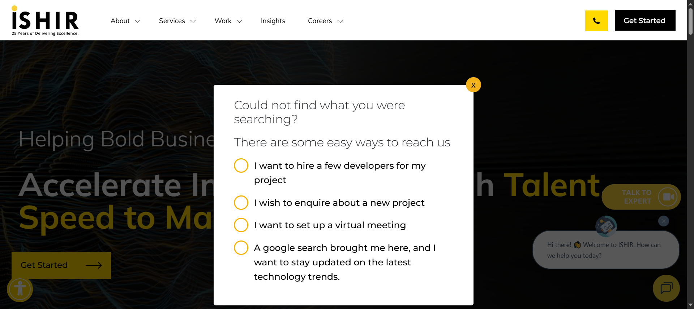

Started
Oct 7, 2025 05:09:38 PM
Ended
Oct 7, 2025 05:16:22 PM
Features Passed
0
Features Failed
3
Features
Scenarios
Steps
Timeline
Tags
| Name | Passed | Failed | Skipped | Others | Passed % |
|---|---|---|---|---|---|
| @AboutPage | 1 | 1 | 0 | 0 | 50% |
| @ProjectRescue | 0 | 2 | 0 | 0 | 0% |
| @CustomSoftDevPage | 1 | 1 | 0 | 0 | 50% |
System/Environment
| Name | Value |
|---|---|
| AppName | Ishir.com |
| user | admin |
| build | v1.01 |
-
About Page Navigation
5:09:40 PM / 00:02:12:345 Fail
About Page Navigation
10.07.2025 5:09:40 PM 10.07.2025 5:11:52 PM 00:02:12:345 · #test-id=1As a user, I want to navigate through the About page to access information and forms.PassNavigate to Our Story pageGiven the user is on the Home pageWhen the user opens the About dropdownAnd selects the Our Story optionThen the Our Story page should appearFailNavigate to Get in Touch from Our Story pageGiven the user is on the Our Story pageWhen the user clicks the Get Started buttonThen the Get in Touch form should appearStep skippedcom.ishir.hooksmanager.ApplicationHooks.tearDown(io.cucumber.java.Scenario)Navigate_to_Get_in_Touch_from_Our_Story_pagecom.ishir.hooksmanager.ApplicationHooks.sendEmailOnFailure(io.cucumber.java.Scenario) -
Custom Software Dev Page Navigation
5:11:52 PM / 00:01:57:344 Fail
Custom Software Dev Page Navigation
10.07.2025 5:11:52 PM 10.07.2025 5:13:49 PM 00:01:57:344 · #test-id=23As a user, I want to navigate through the Custom Software Dev Page to access different forms.PassNavigate to Custom Software Dev MenuGiven the user is on the Home pageWhen the user hovers Software dev support MenuAnd click Custom Software DevelopmentThen Custom Software Dev page should appearFailNavigate to Get in Touch via custom software dev pageGiven the user is on the custom software dev pageWhen the user clicks Get Started on custom software dev pageThen the Get in Touch form should appearStep skippedcom.ishir.hooksmanager.ApplicationHooks.tearDown(io.cucumber.java.Scenario)Navigate_to_Get_in_Touch_via_custom_software_dev_pagecom.ishir.hooksmanager.ApplicationHooks.sendEmailOnFailure(io.cucumber.java.Scenario) -
Project Rescue Page Navigation
5:13:49 PM / 00:02:32:752 Fail
Project Rescue Page Navigation
10.07.2025 5:13:49 PM 10.07.2025 5:16:22 PM 00:02:32:752 · #test-id=45As a user, I want to navigate through the Project Rescue Page to access different forms.FailNavigate to Project Rescue MenuGiven the user is on the Home pageWhen the user hovers Software dev support MenuAnd click Project Rescue MenuThen Project Rescue page should appearStep skippedcom.ishir.hooksmanager.ApplicationHooks.tearDown(io.cucumber.java.Scenario)Navigate_to_Project_Rescue_Menucom.ishir.hooksmanager.ApplicationHooks.sendEmailOnFailure(io.cucumber.java.Scenario)FailNavigate to Get in Touch via Project Rescue pageGiven the user is on the Project Rescue pageWhen the user clicks Get Started on Project Rescue pageThen the Get in Touch form should appearStep skippedcom.ishir.hooksmanager.ApplicationHooks.tearDown(io.cucumber.java.Scenario)Navigate_to_Get_in_Touch_via_Project_Rescue_pagecom.ishir.hooksmanager.ApplicationHooks.sendEmailOnFailure(io.cucumber.java.Scenario)
-
org.openqa.selenium.NoSuchElementException
2 tests
org.openqa.selenium.NoSuchElementException
2 failedStatus Timestamp TestName Fail 17:12:51 PM When the user clicks Get Started on custom software dev page Custom Software Dev Page Navigation.Navigate to Get in Touch via custom software dev page.When the user clicks Get Started on custom software dev pageFail 17:15:26 PM When the user clicks Get Started on Project Rescue page Project Rescue Page Navigation.Navigate to Get in Touch via Project Rescue page.When the user clicks Get Started on Project Rescue page -
org.apache.commons.mail.EmailException
4 tests
org.apache.commons.mail.EmailException
4 failedStatus Timestamp TestName Fail 17:11:18 PM com.ishir.hooksmanager.ApplicationHooks.sendEmailOnFailure(io.cucumber.java.Scenario) About Page Navigation.Navigate to Get in Touch from Our Story page.com.ishir.hooksmanager.ApplicationHooks.sendEmailOnFailure(io.cucumber.java.Scenario)Fail 17:13:15 PM com.ishir.hooksmanager.ApplicationHooks.sendEmailOnFailure(io.cucumber.java.Scenario) Custom Software Dev Page Navigation.Navigate to Get in Touch via custom software dev page.com.ishir.hooksmanager.ApplicationHooks.sendEmailOnFailure(io.cucumber.java.Scenario)Fail 17:14:39 PM com.ishir.hooksmanager.ApplicationHooks.sendEmailOnFailure(io.cucumber.java.Scenario) Project Rescue Page Navigation.Navigate to Project Rescue Menu.com.ishir.hooksmanager.ApplicationHooks.sendEmailOnFailure(io.cucumber.java.Scenario)Fail 17:15:50 PM com.ishir.hooksmanager.ApplicationHooks.sendEmailOnFailure(io.cucumber.java.Scenario) Project Rescue Page Navigation.Navigate to Get in Touch via Project Rescue page.com.ishir.hooksmanager.ApplicationHooks.sendEmailOnFailure(io.cucumber.java.Scenario) -
org.openqa.selenium.TimeoutException
2 tests
org.openqa.selenium.TimeoutException
2 failedStatus Timestamp TestName Fail 17:10:36 PM When the user clicks the Get Started button About Page Navigation.Navigate to Get in Touch from Our Story page.When the user clicks the Get Started buttonFail 17:14:08 PM And click Project Rescue Menu Project Rescue Page Navigation.Navigate to Project Rescue Menu.And click Project Rescue Menu